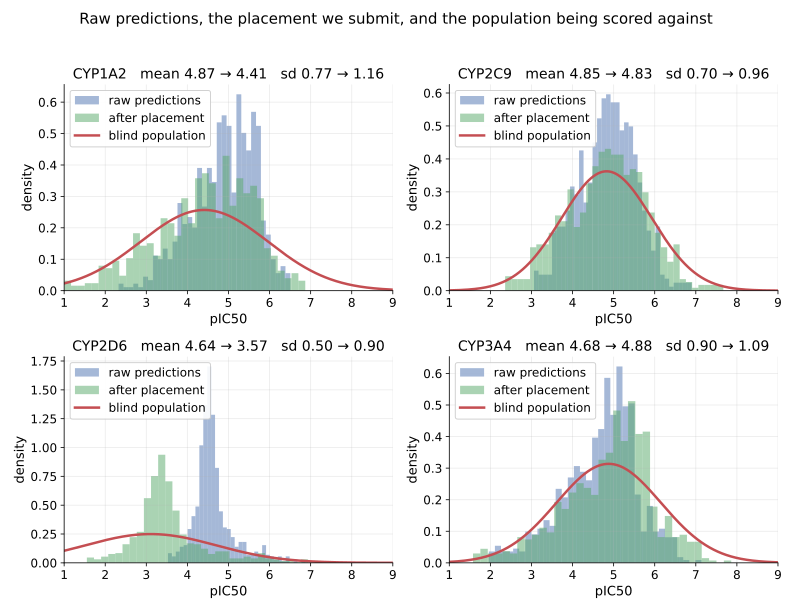

OpenADMET CYP Challenge — Working Notes
Current entry
An average of four multi-task Chemprop models over the challenge data plus public CYP potency, stock hyperparameters, plus a per-isoform placement correction. Macro ST-RAE 0.4378, rank 1 of 81 as of 2026-08-28.
Work in progress. The OpenADMET CYP Inhibition Blind Challenge (Direct Inhibition track) is still open. The model changes between submissions, and the live leaderboard scores only half the test set. So these are just some early observations that may, or may not, translate well to the final leaderboard.
Two things carry the entry. First, a multi-task graph model trained on the challenge assay alongside every adjacent public readout we could align, ensembled across architectures. Second, an explicit correction for the distribution shift between the training labels and the blind set.
The Model
Four Chemprop D-MPNNs, averaged. All are SMILES-only with stock hyperparameters, trained on the challenge release plus ChEMBL and the NCATS qHTS panel, up to 32,900 compounds and 175,700 labels. They differ in which targets share an encoder.
| member | heads | encoder sees |
|---|---|---|
union-p30 |
18 | all four isoforms; challenge + ChEMBL + qHTS |
mt-aux-100 |
8 | all four isoforms; challenge arms only |
2d6-isoform |
6 | every CYP2D6 readout, nothing else |
2d6-single |
1 | CYP2D6 pIC50 alone |
Only the four scored pIC50 heads are ever submitted; the rest exist to shape the representation. The specialists carry no other isoforms, so CYP1A2, CYP2C9 and CYP3A4 average two members and CYP2D6 averages four. Predictions are averaged, then placed.
Why multi-task. The isoforms are correlated and the per-isoform data is small, 1,300–2,300 curves each. One encoder learning from all 6,525 measurements is a data-efficiency argument, not a claim that graph learning resolves activity cliffs; on cliffs descriptor models match or beat GNNs, as OpenADMET's own tutorial reports.
Why auxiliary heads rather than more rows. Every extra source measures something adjacent to the scored target, not identical to it: the single-concentration arm reports a fold-change, ChEMBL's potency comes from other labs and reads ~0.5 log more potent on shared compounds, and the qHTS panel reports efficacy at the top concentration. Pooling any of them into the scored columns needs a cross-assay correction; as separate heads none is required, since the encoder learns from all of them and each head keeps its own scale.
Why an ensemble. Averaging decorrelated models cancels the error that belongs to architecture and training run rather than to the chemistry. Members are chosen for how differently they see the problem, not for how they score alone. The two CYP2D6 specialists earn their slots that way: a different slice of the data, so different compounds missed. The average beats every member it contains, and the gain flattens by the fourth.
What the public data contributes. ChEMBL adds ~24,700 compounds disjoint from the challenge deck: 185 structures overlap it, zero overlap the blind set. The qHTS panel adds max-response, recorded whether or not a compound inhibited, so the ~42,000 rows that showed nothing still carry signal where a potency-only source drops them.
Two Populations
The blind set is not a random draw. OpenADMET built it by hit expansion: the top 25 hits for CYP1A2, CYP2C9 and CYP3A4, then the top 10 catalog chemisimilars purchased for each, giving 750 compounds in dense structural clusters around potent molecules.
Clustered around hits is not the same as active: analogs of a potent compound are mostly not potent, and CYP2D6 was not among the isoforms hits were selected on, so it got no enrichment at all. Every training label meanwhile survived two filters: a compound was screened because someone thought it might be active, and labelled only if its dose-response curve fit. Compounds that did nothing produce no curve and no label.
The gap is estimable before submitting anything. The PubChem qHTS panel puts CYP2D6 inactivity near 65%; a set that inactive centres around pIC50 3.7, against the 4.69 a model trained on fitted curves predicts. The blind population is also wider on all four isoforms. Squared-error models shrink toward the mean, and a label set built from successful fits is already narrower than the population it came from.
Placement
Predictions carry two independent things. Their order, which is the model, and their placement on the axis, which is not. R² decomposes exactly:
with ρ the Pearson correlation, k = sd(pred)/sd(true) the spread ratio, and b the mean offset in sd(true) units. Only ρ depends on the ordering; k and b come from an affine transform that touches no compound's rank. So R² ≤ ρ² is a hard ceiling, and a model far below its own ρ² is mis-placed, not weak.
The optimum is k = ρ, not k = 1. Matching the spread of the truth is wrong: a model with ρ = 0.7 should be 70% as wide as reality, because shrinking toward the mean is the correct response to uncertainty. Raw predictions are narrower still.
So: estimate the target population's centre and spread, then place each isoform there with spread ρ·sd.

CYP2D6 shows the effect at full scale: raw predictions spike at 4.5 with sd 0.49 against a population centred at 3.1 with sd 1.60. It never calls a compound a non-inhibitor, and predicts into under a third of the actual range.
Placement changes the score on identical weights and an identical ordering. Spearman and Kendall come back bit-identical under an affine transform, which doubles as the integrity check: if they move, the bug is in the submission pipeline.
The catch. The placement that maximises R² does not minimise the scored metric. Soft-threshold RAE is zero anywhere inside a compound's credible interval, and low-activity compounds carry wide intervals, so predicting high is nearly free while predicting low is punished by the actives. Placing CYP2D6 on its true centre raises R² and worsens ST-RAE; there the two objectives point in opposite directions.
Open Problems
CYP2D6. The weakest of the four and the only one not at the top of its board. It is the isoform the challenge did not select hits on, so its blind population is the lowest-centred and widest. Its R² sits above the ceiling its own Spearman supports, which happens only when Pearson runs well ahead of rank correlation: the linear fit is fine, and the cost is ordering inside the flat low-activity region where most of its compounds sit.
Both rulers are underpowered. Repeated training runs of one configuration at different seeds disagree by more than candidate models do, so out-of-fold cross-validation cannot resolve the differences now being chased. The leaderboard is not much better: a Spearman's standard error is largest where the correlation is weakest, making CYP2D6 the worst-resolved isoform on both. Anything below the noise floor is treated as unmeasured rather than as a result.
Where the ST-RAE optimum sits. Known by sampling placements against the board, not derived. A credible-interval width model would give it directly.
Reproducing This
Source code: ml_pipelines/OpenADMET/cyp — every script referenced here, each with its measurements in the docstring.
Built with ADMET Workbench:
# FeatureSets: the challenge release, its auxiliary arms, then the public union
python ml_pipelines/OpenADMET/cyp/cyp_feature_sets.py
python ml_pipelines/OpenADMET/cyp/cyp_aux_features.py
python ml_pipelines/OpenADMET/cyp/cyp_union_features.py
# The four ensemble members, each trained on 100% of the data
python ml_pipelines/OpenADMET/cyp/cyp_chemprop_mt_aux_100.py
python ml_pipelines/OpenADMET/cyp/cyp_chemprop_union.py --public-weight 0.30
python ml_pipelines/OpenADMET/cyp/cyp_chemprop_2d6.py --scope isoform
python ml_pipelines/OpenADMET/cyp/cyp_chemprop_2d6.py --scope single
# Average their predictions over the 750 blinded compounds, then place them
python ml_pipelines/OpenADMET/cyp/scripts/cyp_ensemble_submit.py
python ml_pipelines/OpenADMET/cyp/scripts/cyp_recalibrate.py --source outputs/<file> --strae
Submission files are checked with OpenADMET's own validator, vendored from their tutorial repository, so the gate before uploading is the same code the platform runs.
References
- OpenADMET CYP Inhibition Blind Challenge
- CYP Challenge Tutorial — baseline notebooks, scoring harness, submission validators
- A Weekend on the OpenADMET PXR Challenge — our prior blind-challenge write-up, and where the HPO and 3D-descriptor priors come from
- van Tilborg et al., Exposing the Limitations of Molecular Machine Learning with Activity Cliffs, J. Chem. Inf. Model. 2022
Questions?
Open an issue on GitHub or reach us at SuperCowPowers.